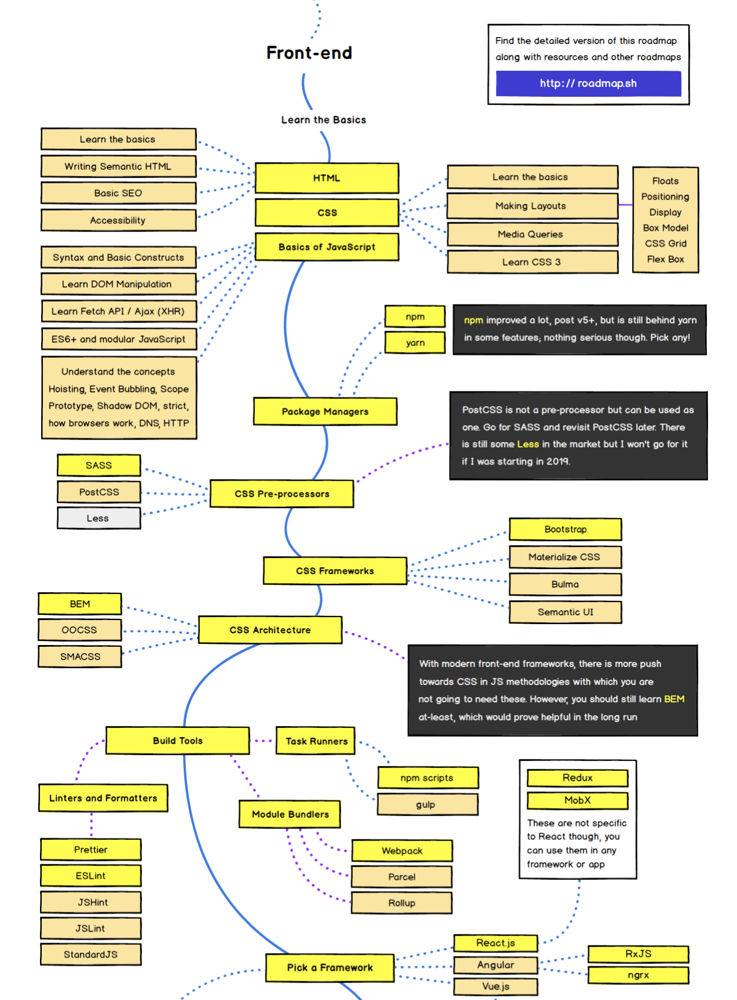

If you are a new cadet and you are asking yourself how much time will it take you before you get a job, then this article might be for you.
Most of us who came to 42, want a job as soon as possible. However, with the 42 curriculum, you are only learning to code in C. Search on google, how many jobs are there out there related to C and look at the requirements. Insane !!!
Well if you want to be able to start applying for jobs within the next 6 months, then you have to learn web development. Now the famous question : frontend or backend or fullstack.
Well start with frontend. Why? Because it gives you the opportunity to make money while you are still learning. You can start making money in as little as 3 months after you start learning webdev. It’s not gonna be a huge amount of money, but an extra $100 per week can help you eat properly while at 42.
But keep in mind, its gonna require hard work and consistent effort.
Start with the basics of front end (1 months)
Practice, learn and more technologies to your stack (2 months)
Add basics of backend (another 1 months)
At this point, you are ready for an entry level position
Below is a guide to learning web dev:
Check out my article about A Guide to learning Front End Web Dev